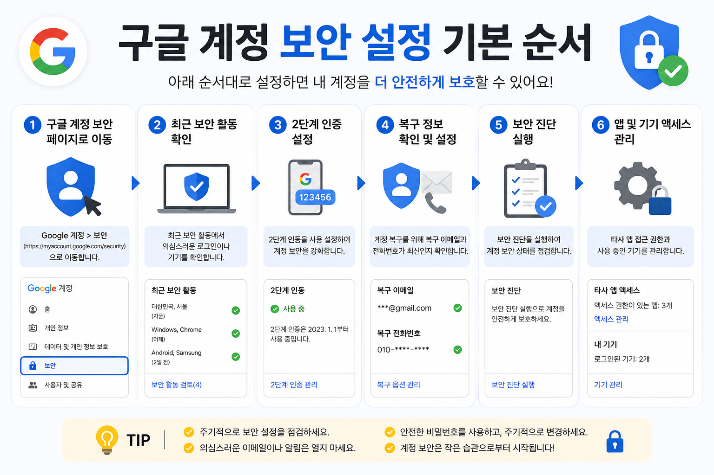

구글 계정 보안 설정 기본 순서
비밀번호, 복구 이메일, 로그인된 기기, 2단계 인증을 차례대로 확인해 구글 계정을 안전하게 관리하는 방법입니다.

디지털 기기와 앱 설정은 한 번에 모두 바꾸기보다, 현재 상태를 확인하고 필요한 부분부터 차근차근 조정하는 편이 안전합니다. 이 글은 처음 확인할 항목과 정리 순서, 주의할 점을 함께 볼 수 있도록 구성했습니다.
구글 계정을 먼저 점검해야 하는 이유
구글 계정은 이메일, 사진, 문서, 유튜브, 휴대폰 백업과 연결되는 경우가 많습니다. 한 계정에 여러 서비스가 묶여 있기 때문에 비밀번호 하나만 관리하는 것으로는 부족할 수 있습니다. 보안 설정은 어렵게 느껴져도 순서대로 보면 비교적 간단합니다.
비밀번호 재사용 여부 확인하기
다른 사이트와 같은 비밀번호를 쓰고 있다면 먼저 바꾸는 것이 좋습니다. 여러 사이트에서 같은 비밀번호를 쓰면 한 곳에서 정보가 노출되었을 때 다른 계정까지 위험해질 수 있습니다. 이름, 생일, 전화번호처럼 추측하기 쉬운 정보는 피하고, 길이가 충분한 조합을 사용하는 편이 안전합니다.
복구 이메일과 전화번호 최신 상태로 유지하기
계정에 접속하지 못할 때 복구 이메일과 전화번호가 필요합니다. 오래된 이메일, 해지한 전화번호, 더 이상 쓰지 않는 기기가 연결되어 있으면 복구가 어려워질 수 있습니다. 보안 점검을 할 때는 비밀번호보다 복구 정보가 현재 사용 중인 정보인지 함께 확인해야 합니다.
로그인된 기기 목록 확인하기
구글 계정에는 현재 로그인된 휴대폰, 태블릿, PC가 표시됩니다. 모르는 기기가 있거나 오래전에 사용한 기기가 남아 있다면 로그아웃 처리하는 것이 좋습니다. 공용 PC에서 로그인한 적이 있다면 이 목록을 꼭 확인하세요.
2단계 인증 켜기
2단계 인증은 비밀번호가 노출되더라도 추가 확인을 요구하는 보안 장치입니다. 휴대폰 알림, 인증 앱, 문자 인증 등 여러 방식이 있습니다. 본인이 꾸준히 사용할 수 있는 방식을 선택하고, 휴대폰을 잃어버렸을 때를 대비해 복구 방법도 함께 확인해야 합니다.

계정과 개인정보를 지키는 최종 점검
- 다른 사이트와 같은 비밀번호를 쓰는지 확인하기
- 복구 이메일과 전화번호 최신화하기
- 모르는 로그인 기기 제거하기
- 2단계 인증 설정하기
- 백업 코드나 복구 방법을 안전하게 보관하기
설정을 바꾸거나 파일을 삭제하기 전에는 중요한 자료가 남아 있는지 한 번 더 확인하는 것이 좋습니다. 가족과 함께 쓰는 기기나 업무용 계정이라면 변경 내용을 공유해 두면 불필요한 혼선을 줄일 수 있습니다.
구글 계정에서 먼저 확인할 보안 단서
구글 계정을 확인할 때는 로그인 기록, 연결된 기기, 복구 수단을 함께 보는 것이 중요합니다. 낯선 기기나 위치가 보이면 비밀번호 변경과 기기 로그아웃을 우선 진행하세요.
구글 계정에서 복구 가능성을 남기는 법
보안을 강화할수록 복구 수단이 최신이어야 합니다. 복구 이메일과 전화번호가 오래된 정보라면 먼저 수정하고, 2단계 인증을 켤 때는 백업 코드를 따로 보관하세요.
구글 계정 관련 공식 확인처
확인 기준: 2026.06.27 · 작성/검토: SY Guide 편집팀 · 정정 문의: issuebara@gmail.com